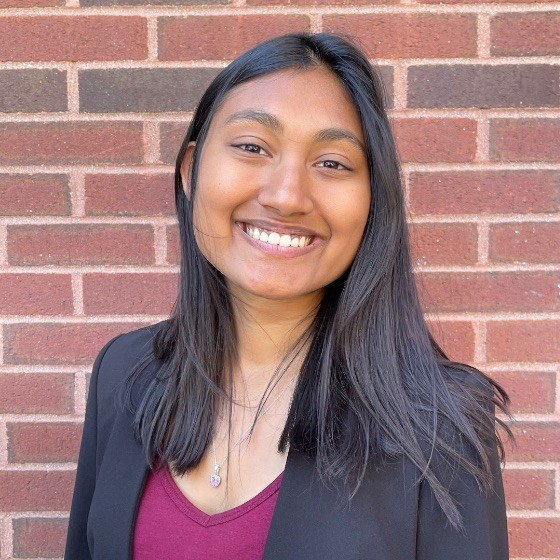

I am senior at MIT studying Aeronautics and Astronautics. I am interested in working on space systems and satellites, specifically on guidance and control as well as it's intersection with fluid dynamics and thermodynamics. I love entrepreneurship and cross-disciplinary efforts to make tech better.
I started this blog because I love writing about random shit. It is my favorite thing to do with a cup of coffee by my side.
